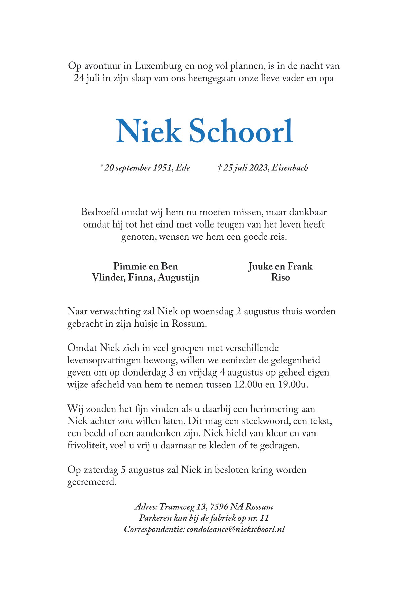
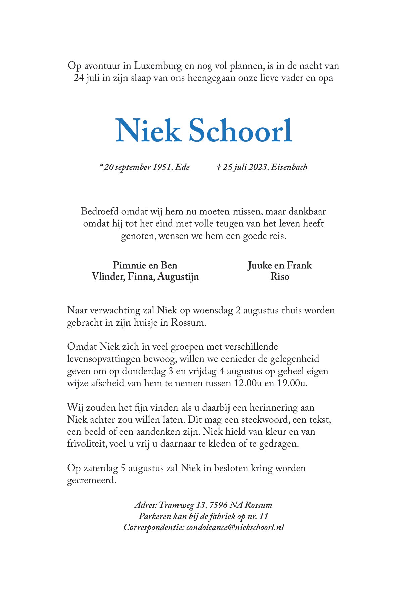
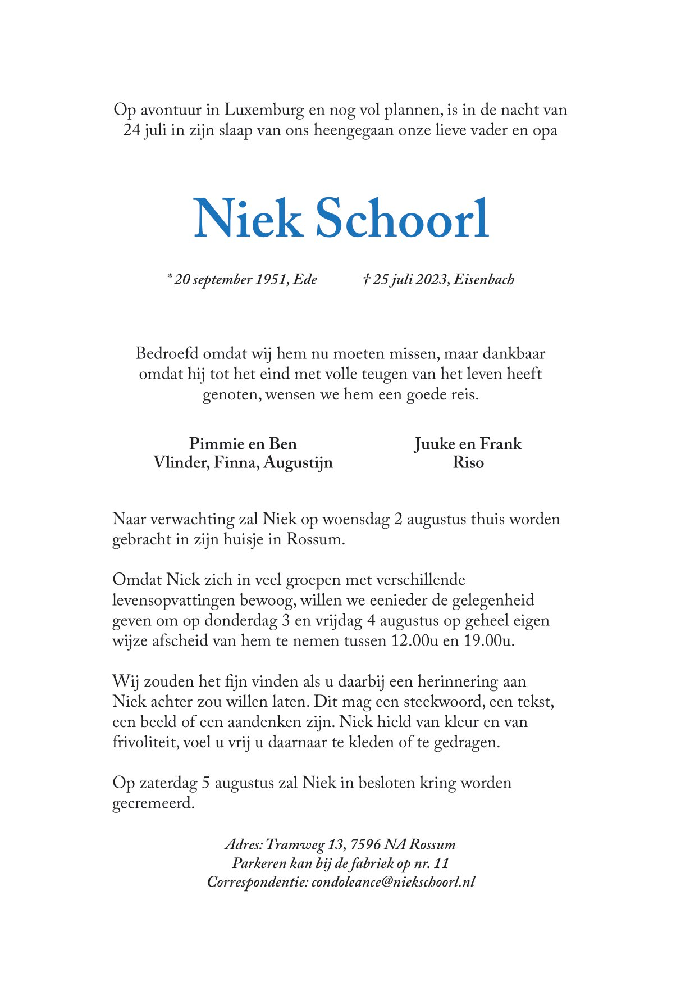

 

![In Memoriam
Als mens was Niek een veelkleurig mozaïek; een persoon met vele
gezichten. Hij was lief en gevoelig, een markante verschijning en
een enthousiaste levensgenieter, maar hij was ook anarchistisch
en onpeilbaar. Hij had een sterke moraal maar was evengoed een
opportunist. Hij was iemand die zonder problemen zijn ideologische
affiniteit met de kabouterbeweging verenigde met het trotse bezit
van een jaguar XK8 en zijn liefde voor natuur en planeet ging hand
in hand met zijn liefhebberij van de laatste gadgets uit Silicon Valley.
Deze uitersten waren karakteristiek voor hem. Aan de ene kant was
hij een fantasierijke dromer en aan de andere kant stond hij met beide
sandalen op de grond. Niek liet zich moeilijk typeren omdat hij zijn
eigen autonomie boven al het andere waardeerde.
Aan plannen had Niek nooit een gebrek. Waar anderen problemen
zagen, zag hij vooral de kansen en de mogelijkheden. Wanneer
een probleem zich aandiende trok hij zich terug om er even op te
mijmeren en te ‘hmm-en’ om vervolgens met praktische en elegante
oplossingen te komen. Het was hem gewoon te denken met zijn
handen en zo gaf hij zijn eigen leven en de wereld om hem heen vorm.
Niek was een vrijbuiter en een avonturier. Niets onbekends schrok
hem af. Iedere week was er wel een nieuw plan voor een verre reis,
een nieuwe hobby of een nieuwe carrière, waar hij zich telkens weer
met (soms onbezonnen) volledige overgave op stortte. Niek heeft
veel gereisd naar Cambodja en Thailand, waar hij zich verwant voelde
met de cultuur, maar toen het maken van verre reizen de laatste
jaren fysiek uitdagender werd ging hij met een kleine bus-camper in
Nederland en Europa op pad.
Op avontuur met de camper in Luxemburg en nog vol plannen is
Niek de nacht van 24 juli in zijn slaap overleden.](assets/rouwkaart-4.jpg)